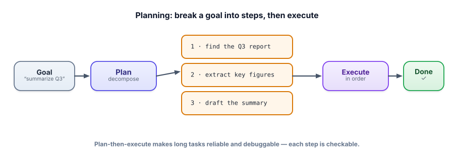

Planning & decomposition
Reactive loops can wander on big goals — taking a step, then another, hoping to stumble toward done. Planning fixes that: break the goal into explicit sub-tasks first, then execute them. It makes long tasks more reliable, debuggable, and sometimes parallelizable.
Why plan instead of just react
The ReAct loop is great for tasks where each step reveals the next. But for a goal like “produce a competitive analysis of three products,” a purely reactive agent can lose the thread — forgetting a competitor, repeating work, or rambling. Planning adds a step where the model first decomposes the goal into an ordered list of sub-tasks, then works through them. You get structure you can inspect (“is this plan sensible before we spend money executing it?”), a natural place to track progress, and the option to run independent sub-tasks in parallel.

Decomposition is breaking a goal into smaller sub-tasks. Planning is producing an ordered set of those sub-tasks before (or alongside) execution. Plan-then-execute makes the plan once up front and runs it; plan-and-reflect (or replanning) re-checks progress after steps and revises the plan when reality diverges. The right choice depends on how predictable the task is.
Planning is like packing for a school trip with a checklist: toothbrush, water bottle, jacket, then you pack and tick items off. If the forecast suddenly says rain, you add an umbrella to the list instead of ignoring the news. The analogy breaks because your checklist doesn't hallucinate; a model's plan can include steps that are impossible or tools that don't exist, so you check the plan before acting on it.
Three planning patterns
| Pattern | How it works | Best when |
|---|---|---|
| Plan-then-execute | Make the full plan, then run each step | The steps are predictable up front |
| Least-to-most | List sub-problems, solve simplest first, build up | Hard problems that decompose into easier ones |
| Plan-and-reflect | Plan, execute a step, re-evaluate, replan as needed | Open-ended tasks where results surprise the plan |
Ask the model for a plan as structured data, inspect it, then run each step. Separating planning from execution is what makes the agent debuggable.
import json, ollama
def ask(prompt, system=None, model="qwen2.5:7b"): # one chat call; returns the reply text
msgs = ([{"role": "system", "content": system}] if system else []) + [{"role": "user", "content": prompt}]
return ollama.chat(model=model, messages=msgs)["message"]["content"]
# Stand-ins so this runs on its own. In a real build, run_agent is the tool-using loop from Lesson 4.3
# (labs/04_agent_tools.py) and tool_schemas is its tool list.
tool_schemas = []
def run_agent(task, tools):
return ask(task)
def make_plan(goal):
prompt = f'Break this goal into 2-5 ordered steps. Return JSON: {{"steps": ["...", "..."]}}.\nGoal: {goal}'
out = ollama.chat(model="qwen2.5:7b",
messages=[{"role":"user","content":prompt}], format="json")["message"]["content"]
return json.loads(out)["steps"]
def run_planned_agent(goal):
plan = make_plan(goal)
print("PLAN:", plan) # inspect before executing — cheap insurance
results = []
for i, step in enumerate(plan, 1):
# execute each step with the agent loop from 4.3 (tools available)
r = run_agent(f"Step {i} of the plan for '{goal}': {step}", tool_schemas)
results.append(r)
# final synthesis
return ask(f"Goal: {goal}. Step results: {results}. Write the final deliverable.")
print(run_planned_agent("Compare the warranties of the X200 and X300 blenders"))Because the plan is explicit data, you can log it, validate it, even let a human approve it before any tools run. That inspectability is the whole point of planning.
Assumptions: a strategy team asks an agent for a pricing comparison of 12 competitors. Each 'research one competitor' sub-task takes about 4 minutes of agent time (searches, reads, extraction). Synthesis takes 3 minutes. The rate limit allows 4 sub-agents at once.
- Purely reactive loop. One agent works through competitors in whatever order it drifts into: 12 x 4 = 48 minutes plus 3 for synthesis = 51 minutes, and traces show it sometimes forgets one competitor.
- Plan as data. A planning call returns JSON: 12 research nodes (no dependencies between them) and 1 synthesis node depending on all 12. Code validates it: are all 12 names from the request present, does every step use a tool that exists, and is the step count under the cap?
- Run the graph. With 4 workers, 12 independent nodes run in 3 waves: 3 x 4 = 12 minutes. Add synthesis: 15 minutes, about 3.4x faster. Coverage is checked by code, not by the model's memory.
- Reflect and replan. In wave 2, one competitor's pricing page is behind a login. The worker returns 'blocked', and the planner adds one node (search analyst coverage and archived pages) instead of failing the whole brief.
- Cost check. Planning adds one call. If that call is 2,000 input and 500 output tokens at claude-sonnet-5-5 rates ($2/M, $10/M, Claude models overview), it costs $0.009, far less than one wasted research branch.
- Planning decomposes a goal into ordered sub-tasks before executing — structure you can inspect.
- Plan-then-execute suits predictable tasks; plan-and-reflect suits open-ended ones where results surprise the plan.
- An explicit plan gives you progress tracking, debuggability, human approval, and possible parallelism.
- Don’t over-plan: simple tasks just need the reactive loop — planning adds value as goals get longer and more open.
- The best agents combine planning (structure) with reactive execution (adaptivity).
An agent is asked to “book the cheapest flight, then add it to my calendar.” Halfway through, the booking API returns “sold out.” A rigid plan-then-execute agent fails. What design would handle this better?
Why have an agent plan before acting?
Your planner returns 7 steps, and step 4 uses a tool called fetch_salesforce that your agent does not have. What should happen?
1. Decompose “write a launch blog post about our new feature” into 3–5 sub-tasks. Which could run in parallel?
2. Give a task where plan-then-execute is ideal and one where plan-and-reflect is necessary.
3. Why is letting a human approve the plan often safer and cheaper than approving each action?
▸ Show solutions & reasoning
1. e.g., (1) gather the feature’s key points, (2) draft an outline, (3) write the post, (4) write a title + meta description, (5) suggest social snippets. Steps 4 and 5 depend on 3, but once the post exists they’re independent of each other and could run in parallel. Spotting independent sub-tasks is how you parallelize and speed up agents.
2. Plan-then-execute: “generate a monthly report from these three known data sources” — the steps are fixed and predictable. Plan-and-reflect: “investigate why this server’s latency spiked last night” — each finding changes what you look at next, so the plan must evolve with the evidence.
3. Approving the plan is one cheap, high-level review of intent before any tools run or money is spent — you catch a bad approach early. Approving every action is slow, interrupts the agent constantly, and still happens after some work is done. Plan-level approval gives oversight at the right altitude; you reserve per-action approval for the few genuinely dangerous steps (Lesson 4.8).
For richer agents, a plan isn’t a flat list but a task graph (a DAG): sub-tasks with dependencies, so the system can run independent branches in parallel and only block where one task truly needs another’s output. This is how serious agent frameworks schedule work — “research competitor A, B, and C” fan out concurrently, then a “synthesize” node waits for all three. Thinking in dependencies, not just sequence, is what gives you both speed and clarity.
The trap to avoid is plan brittleness: a beautifully detailed plan made before the agent has seen any real data is a confident guess, and confident guesses about an uncertain world go stale fast. The mature pattern is “plan loosely, reflect often” — sketch enough structure to stay organized, but treat the plan as revisable and re-check it against observations as you go. Over-planning upfront is the agent equivalent of writing a 50-page spec before talking to a user. Structure where it helps, adaptivity where reality intervenes — that balance is the craft of agent planning.
labs/04_agent_tools.pyFree and offline once set up: Ollama with qwen2.5:7b, plus the packages in labs/README.md. From the course folder:
python labs/04_agent_tools.pyWhat to look for: The lab's agent is reactive, not planned, so use it as the baseline: give it a three-part request and read the trace to see whether it covers every part and in what order. Then add a planning call that returns a JSON list of steps, print it before running, and compare the traces. The lab does not build a task graph; that part is yours.
Small samples: these labs use 5 to 20 cases so they run in minutes on a laptop. Where they report a rate, they print n and a 95% Wilson interval. Read them as a demonstration of the mechanism, not as a measured rate for your system; for that you need hundreds of cases and several seeds.
▸ Recorded output (our run, 2026-11-03, qwen2.5:7b on a laptop GPU)
Second scripted model: it calls issue_refund for Rs 1500 (over the Rs 1000 auto-approve line), then answers.
step 1: issue_refund({'order_id': 'ORD-55120', 'amount_rs': 1500}) -> {'status': 'pending_human_approval', 'order_id': 'ORD-55120', 'amount_rs': 1500}
step 2: FINAL -> Your refund request has been sent for approval.
Look: the code returned pending_human_approval and the audit log records NEEDS_HUMAN: money did not move.
(The claim checker above is a crude regex: it can flag a polite 'shall I proceed?' as a promise. Read the
flagged lines yourself; in production you compare structured tool results, not text patterns.)
Audit log (what actually moved money)
('BLOCKED', 'ORD-55120', 25000)
('NEEDS_HUMAN', 'ORD-55120', 1500)
unbacked claims detected: 1 ignored refund requests: 1
Look: the Rs 25000 request was blocked by code, whatever the model was persuaded to try.
And check every FINAL line against the tool results: a fluent agent can promise an action it never
took, or add numbers no tool returned (e.g. a refund timeline). Verify claims against the audit log.
Prompts guide the model; only code enforces policy.Your numbers will differ a little run to run. Full log: labs/outputs. Source: labs/04_agent_tools.py.
Warm-up. Draw the dependency graph for: 'Pull last month's sales from the warehouse, pull marketing spend from the ads API, compute ROI per channel, write a summary, email it to the CMO.' Which steps can run in parallel?
▸ Solution
Nodes: A = pull sales, B = pull spend, C = compute ROI (needs A and B), D = write summary (needs C), E = email (needs D, plus human approval because it is an outbound message). A and B are independent and can run in parallel. Everything after is a chain. The critical path is max(A, B) + C + D + E.
Transfer. A plan-then-execute agent books meeting rooms. It fails 12% of the time because rooms get taken between planning and booking. Change the design.
▸ Solution
Make booking a check-then-act step at execution time, not a decision fixed in the plan: the plan says 'book a room with at least 8 seats on floor 3 at 10:00', and the executor checks availability right before booking. On a conflict, the executor tries the next candidate and only replans if all candidates fail. Better still, use the booking API's atomic hold or reserve call so check and act cannot race. This is plan-and-reflect, applied only where the world changes under you.
Stretch. Design a plan validator for an agent that writes SQL migrations. List the checks it runs before any step executes.
▸ Solution
Checks: (1) schema: the plan parses into the expected JSON with steps, tool and arguments; (2) every tool exists and is allowed for this user; (3) step count and estimated cost are under budget; (4) dependencies form a DAG (no cycles) and every referenced output is produced by an earlier step; (5) risk tags: any DROP, DELETE or ALTER on a production table needs a human approval node before it; (6) a dry-run step (run against a staging copy or with EXPLAIN) comes before the real one; (7) a rollback step exists for each destructive step. Reject with a specific reason and ask the planner to repair.
Junior When would you add an explicit planning step to an agent?
▸ Model answer
When tasks are long enough that a reactive loop loses track: many sub-tasks, a need to cover everything in a list, or a chance to run parts in parallel. A plan as structured data lets me validate it, show it to a human for approval, track progress and fan out independent steps. For short tasks where each step reveals the next, I skip it, because the extra call adds cost and latency and the plan would go stale immediately.
Mid What goes wrong with plan-then-execute in practice, and how do you fix it?
▸ Model answer
Plans are made before the agent has seen any real data, so they go stale: a tool errors, a resource is gone, a search returns something unexpected. A rigid executor either fails or keeps going on a wrong assumption. Fixes: check the result after each step and replan when a step fails or an assumption breaks; keep plans coarse so executors decide details at run time; validate plans against the real tool registry and budget before execution; and cap replans, so a planner that keeps rewriting the plan does not become a new kind of infinite loop.
Senior Design the orchestration for an agent that generates a 40-page due-diligence report from 200 documents.
▸ Model answer
A planner produces a task graph: one extraction node per document batch, then section nodes (financials, legal, market) depending on the relevant extractions, then a consistency check, then assembly. Extraction runs in parallel under a concurrency limit, with structured outputs so section writers get typed data, not prose. Each section writer only sees its own inputs, which keeps contexts small. A checker node validates citations against source documents and flags contradictions between sections. Code tracks coverage: every document processed and every required section present. Budgets apply per node and overall, there are checkpoints so a failure restarts one node, not the whole report, and a human review before delivery.
Plans and loops both rely on the agent remembering what it has done and learned. But the context window is small and forgetful. Next: memory.